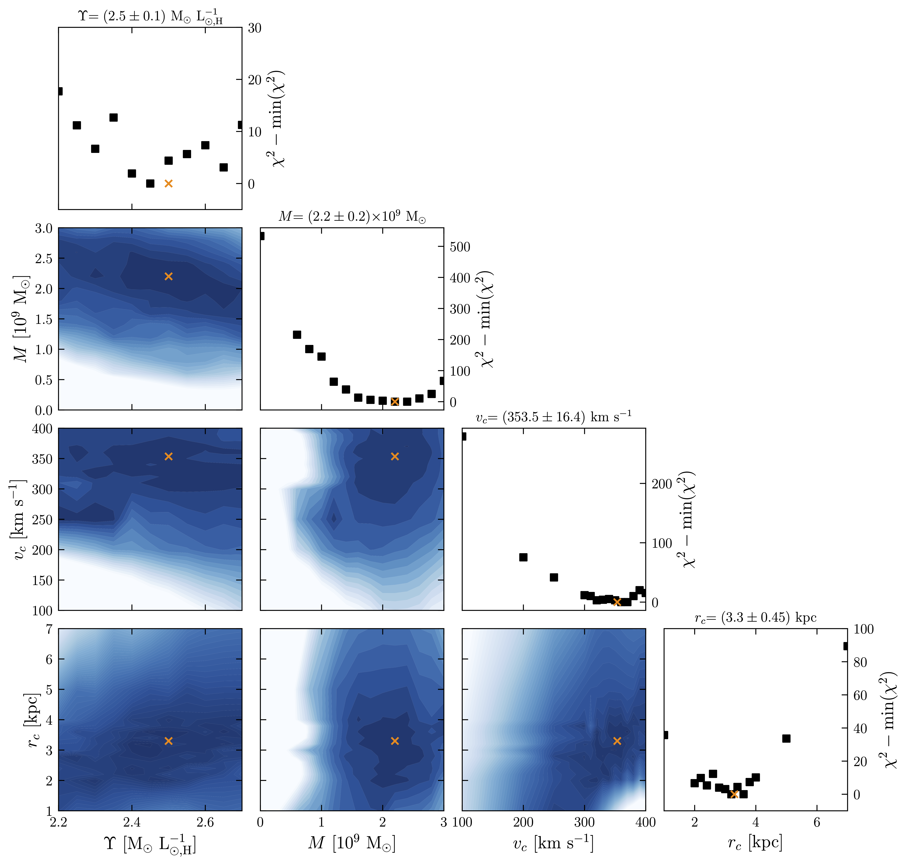
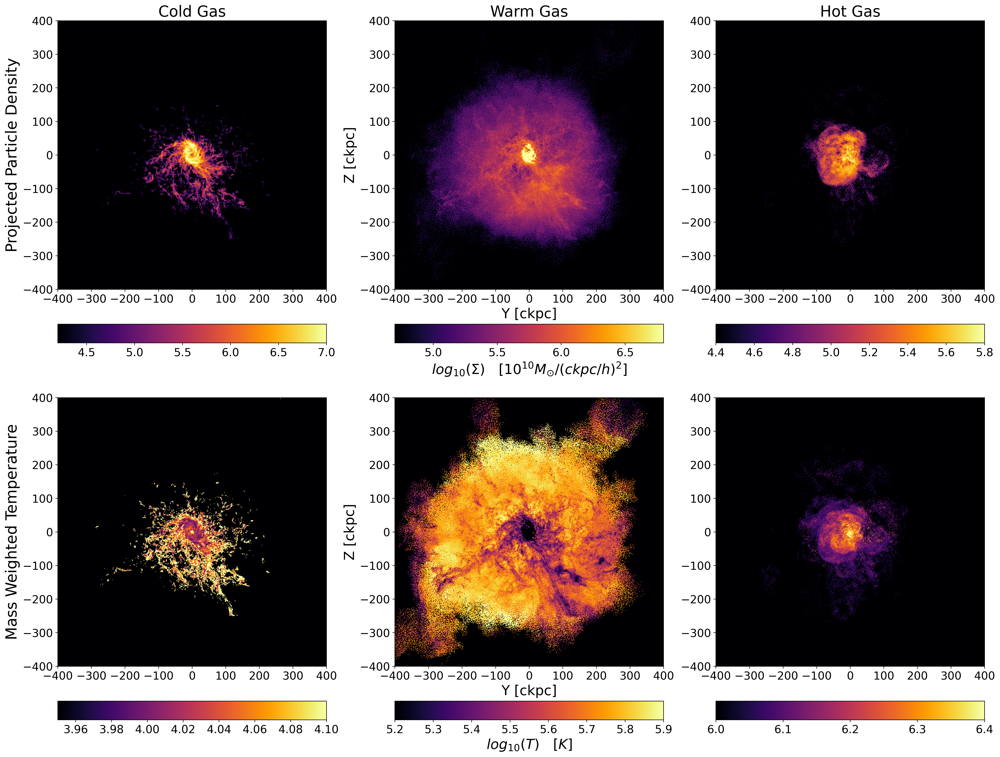

About Me
Hello!
My name is Thomas (Korbin) Waters. I am a first-generation Ph.D. candidate at the University of Michigan, Ann Arbor,
in the Astronomy & Astrophysics program. My primary research interests are in supermassive black holes and their broad
impacts on galaxy properties and evolution.
Academic Journey and Inspiration
My academic journey in astrophysics started following my service in the United States Marine Corps as an infantryman
with the 1st Light Armored Reconnaissance Battalion. I began at South Seattle Community College in Seattle, Washington,
initially aspiring to a career in astronautical engineering. However, after attending my first few physics classes, I
quickly shifted my focus to astronomy. My professor, Dr. Abigail Daane, was an incredible instructor who deeply inspired
me to work towards a career in astronomy. Under her guidance, I received the Ready, Set, Transfer! (RST) Academy
scholarship and began a capstone research project on measuring the mass of our local supermassive black hole,
Sagittarius A*. I was instantly hooked on research the moment I started the project. Moreover, the first time I saw
the results, after months of analysis, I was filled with a sense of accomplishment and wonder that I had never
experienced before. I knew then that my calling was to be a researcher.
Undergraduate Research
After obtaining my Associate of Science degree, I transferred to the University of Washington, Seattle, where I majored
in astronomy and comprehensive physics. In my first quarter, I joined the Pre-Major in Astronomy Program (Pre-MAP),
a class aimed at introducing students to programming and astronomy research. I was paired with Dr. Meredith Rawls and
was introduced to analyzing data from the Dark Energy Camera (DECam), used as a precursor for the Vera C. Rubin
Observatory Legacy Survey of Space and Time (LSST). This experience was one of the highlights of my undergraduate
research as I got my first taste of doing cutting-edge research in astronomy and I gained the foundation of programming
skills that have been essential throughout my career. After Pre-MAP, I was fortunate to be accepted to work with Dr.
Jessica Werk and her team, called the Werk SQuAD (Student Quasar Absorption Diagnosticians), on projects understanding
the circumgalactic medium (CGM) around galaxies, and, as an extension to this, I also worked with Dr. Yakov Faerman on
the properties of cool CGM. Drs. Werk and Faerman were incredible mentors who taught me the importance of collaboration
and the value of a supportive research community.
Summer Internships
In addition to research at the University of Washington, I attended two summer internships that were pivotal to my
development as a researcher. The first was at Caltech in Pasadena, California, where I worked with Dr. Kishalay De,
who was a graduate student at the time, and his advisor, Dr. Mansi Kasliwal, on a project that aimed to optimize their
source detection pipeline for Near-Infrared (NIR) data, which contains the unique challenge of having correlated pixel
noise. The second internship I attended was at the Harvard & Smithsonian Center for Astrophysics in Cambridge, Massachusetts,
where I worked with Dr. Razieh Emami to model galactic gas in the IllustrisTNG TNG50 simulation, which resulted in the
publication of my first-ever first-author paper. These internships and my research at the University of Washington solidified
my passion for research and my desire to pursue a career in academia. I then set my sights on completing my Ph.D.
Current Research and Future Aspirations
After graduating from the University of Washington, I was accepted into the Ph.D. program at the University of Michigan,
Ann Arbor. Here, I work with Dr. Kayhan Gültekin. I am currently engaged in a project that aims to measure the mass of a
collection of supermassive black holes to expand critical galaxy scaling relations. Details of my ongoing research can be
found in the Research section!
I am incredibly fortunate to have had unique opportunities and continue to work in a field I am deeply passionate about. I
intend to continue my career in astrophysics research, aiming for a postdoctoral position after completing my Ph.D.,
leading to a research role at an astrophysics research institution. I am also more broadly interested in data science and
scientific computing. I intend to complete the University of Michigan's Data Science Certificate program to gain a more
robust foundation in data science and scientific computing to complement my research skills.
A Personal Note
Outside of research, I love spending time in nature. My favorite activity is rock climbing, both indoors and outdoors,
but I also enjoy hiking, camping, and backpacking. I also enjoy running, biking, and swimming (admittedly much less than
my other, more relaxing hobbies) but I am currently training for a triathlon! I am trying to make an effort to stay in
shape by, of course, choosing to do something incredibly difficult (the story of my life!). I also have a plethora of hobbies,
including playing the guitar, creating stained glass, reading books (Stephen King and J.R.R. Tolkien are my favorites),
and playing video games. I am a huge fan of RPGs and any game, really that has a compelling story. I am also an avid cook. I
love making all types of food, especially Italian, and I pride myself on making my own recipes. I try to give myself the time
to relax, do things that I enjoy, and spend time with the people I love. I believe that this is essential to being a good researcher!
Get in Touch
I am always open to collaborative opportunities and discussions about astrophysics. Feel free to reach out to me via the
contact form linked in my Contact section. There, you will also find links to my LinkedIn, ORCID,
GitHub, a search on NASA ADS for my publications, and a link to download my CV. I look forward to hearing from you!
Research
My current research revolves around the measurement of supermassive black hole (SMBH) masses using stellar
dynamics. By studying the motions of stars influenced by the gravitational potential of SMBHs, we can infer the mass of
these objects as well properties of the stellar and dark matter components of the galaxy. This work not only helps
understand the behavior and characteristics of SMBHs but also provides insights into galaxy formation and evolution,
galaxy-black hole co-evolution, and can lead to placing constraints on black hole seeding mechanisms.
Current Work
Our most recent work focuses on improving the demographics of intermediate-mass black holes (IMBHs) and low-mass SMBHs.
We are employing stellar dynamical mass measurements within low-mass galaxies that may host these black holes. Utilizing
archival Hubble Space Telescope (HST) data, Multi Unit Spectroscopic Explorer (MUSE) IFU data from the Very Large
Telescope (VLT), and the Schwarzschild orbit library modeling method, we aim to provide accurate mass estimates for the
black holes in our target sample. This research will enhance our understanding of black hole formation and growth, expand
important galaxy scaling relations to the currently undersampled low-mass end, improve our understanding of black
hole-galaxy coevolution, and inform future missions such as the Laser Interferometer Space Antenna (LISA), which is
sensitive to gravitational waves generated in low-mass SMBH and IMBH binary systems.
Notable Results
A Stellar Dynamical Mass Measurement of the Supermassive Black Hole in NGC 3258
Utilizing integral field unit spectroscopy, our team measured the mass of the supermassive black hole (SMBH) in the elliptical (E1)
galaxy NGC 3258. We found a black hole mass of , which is in excellent
agreement with previous measurements utilizing CO gas dynamics. This result reinforces the validity and reliability of both gas and
stellar dynamical methods for SMBH mass measurements.

This figure shows the model output contours for six combinations of the three-integral axisymmetric Schwarzschild orbit-library-based modeling method parameters: SMBH mass
(), H-band mass-to-light ratio
(), asymptotic circular velocity
(), and dark matter halo scale radius (off-diagonal plots). We also present marginalized
values as a function of each parameter on the diagonal plots. In each panel, our best-fit values are shown as orange crosses.
Gas Morphology of Milky Way-like Galaxies in the TNG50 Simulation: Signals of Twisting and Stretching
We analyzed the gas morphologies of 25 Milky Way-like galaxies, employing a novel method called the Local Shell
Iterative Method (LSIM). This study revealed significant insights into the distribution and morphology of cold,
warm, and hot gas, and their correlation with dark matter halos and stellar components, most notably that the
morphological agreement between gas and dark matter increases with temperature. Our findings have significant
implications for understanding galaxy evolution and the role of feedback mechanisms in shaping gaseous and stellar
structures.

This figure shows the projected surface density
(, top panels) and mass weighted temperature
(, bottom panels) maps of the YZ projection for a Milky Way-like galaxy from the IllustrisTNG TNG50 simulation illustrated with its cold gas
() in the left panels, warm gas
() in the middle panels, and the hot gas
() in the right panels. The projected particle density and mass-weighted temperature are given on logarithmic scales.
We present a stellar dynamical mass measurement of the supermassive black hole in the elliptical (E1) galaxy NGC 3258.
Our findings are based on integral field unit spectroscopy from the Multi Unit Spectroscopic Explorer (MUSE) observations
in narrow-field mode with adaptive optics and the MUSE wide-field mode, from which we extract kinematic information by
fitting the Ca II and Mg b triplets, respectively. Using axisymmetric, three-integral Schwarzschild orbit library models,
we fit the observed line-of-sight velocity distributions to infer the supermassive black hole mass, the H-band
mass-to-light ratio, the asymptotic circular velocity, and the dark matter halo scale radius of the galaxy.
We report a black hole mass of at an assumed distance of
31.9 Mpc. This value is in close agreement with a previous measurement from Atacama Large Millimeter/submillimeter
Array CO observations. The consistency between these two measurements provides strong support for both the gas dynamical
and stellar dynamical methods.
We present an in-depth analysis of gas morphologies for a sample of 25 Milky Way-like galaxies from the IllustrisTNG TNG50
simulation. We constrain the morphology of cold, warm, hot gas, and gas particles as a whole using a Local Shell Iterative Method
(LSIM) and explore its observational implications by computing the hard-to-soft X-ray ratio, which ranges between
10-3–10-2 in the inner ~50 kpc of the distribution and 10-5–10-4 at the outer portion of the hot gas
distribution. We group galaxies into three main categories: simple, stretched, and twisted. These categories are based on the radial
reorientation of the principal axes of the reduced inertia tensor. We find that a vast majority (77%) of the galaxies in our sample
exhibit twisting patterns in their radial profiles. Additionally, we present detailed comparisons between 1) the gaseous distributions
belonging to individual temperature regimes, 2) the cold gas distributions and stellar distributions, and 3) the gaseous distributions
and dark matter (DM) halos. We find a strong correlation between the morphological properties of the cold gas and stellar distributions.
Furthermore, we find a correlation between gaseous distributions with DM halo that increases with gas temperature, implying that we may
use the warm-hot gaseous morphology as a tracer to probe the DM morphology. Finally, we show gaseous distributions exhibit significantly
more prolate morphologies than the stellar distributions and DM halos, which we hypothesize is due to stellar and AGN feedback.
Contact